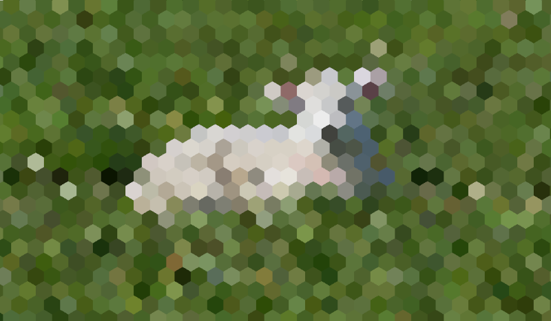

Hậu xử lý tùy chỉnh
Giới thiệu
Godot cung cấp sẵn nhiều hiệu ứng hậu xử lý, bao gồm Bloom, DOF và SSAO, được mô tả trong Môi trường và hậu xử lý. Tuy nhiên, các trường hợp sử dụng nâng cao có thể cần hiệu ứng tùy chỉnh. Bài viết này giải thích cách tự viết các hiệu ứng tùy chỉnh.
Cách dễ nhất để triển khai một shader hậu xử lý tùy chỉnh là dùng khả năng built-in của Godot để đọc từ screen texture. Nếu chưa quen với điều này, bạn nên đọc Bài hướng dẫn shader đọc màn hình trước.
Hậu xử lý một lượt
Hiệu ứng hậu xử lý là các shader được áp dụng lên một frame sau khi Godot đã render nó. Để áp dụng shader lên một frame, hãy tạo một CanvasLayer và thêm cho nó một ColorRect. Gán một ShaderMaterial mới cho ColorRect vừa tạo, và đặt anchor preset của ColorRect thành Full Rect:

Đặt anchor preset thành Full Rect trên node ColorRect
Cây scene của bạn sẽ trông giống như sau:

Ghi chú
Một phương pháp khác hiệu quả hơn là dùng BackBufferCopy để sao chép một vùng màn hình vào buffer và truy cập nó trong script shader thông qua một sampler2D dùng hint_screen_texture.
Ghi chú
Tại thời điểm viết bài, Godot không hỗ trợ render vào nhiều buffer cùng lúc. Shader hậu xử lý của bạn sẽ không truy cập được các render pass khác và các buffer mà Godot không cung cấp (như depth hoặc normal/roughness). Bạn chỉ truy cập được frame đã render và các buffer được Godot cung cấp dưới dạng sampler.
Trong demo này, chúng ta sẽ dùng Sprite hình con cừu này.

Gán một Shader mới cho ShaderMaterial của ColorRect. Bạn có thể truy cập texture và UV của frame bằng một sampler2D dùng hint_screen_texture và uniform built-in SCREEN_UV.
Sao chép đoạn mã sau vào shader của bạn. Đoạn mã dưới đây là một shader pixel hóa hình lục giác của arlez80,
shader_type canvas_item;
uniform vec2 size = vec2(32.0, 28.0);
// If you intend to read from mipmaps with `textureLod()` LOD values greater than `0.0`,
// use `filter_nearest_mipmap` instead. This shader doesn't require it.
uniform sampler2D screen_texture : hint_screen_texture, repeat_disable, filter_nearest;
void fragment() {
vec2 norm_size = size * SCREEN_PIXEL_SIZE;
bool less_than_half = mod(SCREEN_UV.y / 2.0, norm_size.y) / norm_size.y < 0.5;
vec2 uv = SCREEN_UV + vec2(norm_size.x * 0.5 * float(less_than_half), 0.0);
vec2 center_uv = floor(uv / norm_size) * norm_size;
vec2 norm_uv = mod(uv, norm_size) / norm_size;
center_uv += mix(vec2(0.0, 0.0),
mix(mix(vec2(norm_size.x, -norm_size.y),
vec2(0.0, -norm_size.y),
float(norm_uv.x < 0.5)),
mix(vec2(0.0, -norm_size.y),
vec2(-norm_size.x, -norm_size.y),
float(norm_uv.x < 0.5)),
float(less_than_half)),
float(norm_uv.y < 0.3333333) * float(norm_uv.y / 0.3333333 < (abs(norm_uv.x - 0.5) * 2.0)));
COLOR = textureLod(screen_texture, center_uv, 0.0);
}
Con cừu sẽ trông giống như sau:

Hậu xử lý nhiều lượt
Một số hiệu ứng hậu xử lý như làm mờ (blur) tốn nhiều tài nguyên. Bạn có thể khiến chúng chạy nhanh hơn nhiều nếu chia thành nhiều lượt (pass). Trong một material nhiều lượt, mỗi lượt nhận kết quả của lượt trước làm đầu vào và xử lý nó.
Để tạo một shader hậu xử lý nhiều lượt, bạn xếp chồng các node CanvasLayer và ColorRect. Trong ví dụ trên, bạn dùng một đối tượng CanvasLayer để render một shader dùng frame ở layer bên dưới. Ngoài cấu trúc node, các bước đều giống như với shader hậu xử lý một lượt.
Cây scene của bạn sẽ trông giống như sau:

Ví dụ, bạn có thể viết một hiệu ứng làm mờ Gaussian toàn màn hình bằng cách gắn các đoạn mã sau vào từng node ColorRect. Thứ tự áp dụng các shader phụ thuộc vào vị trí của CanvasLayer trong cây scene, càng cao thì càng sớm. Với shader làm mờ này, thứ tự không quan trọng.
shader_type canvas_item;
uniform sampler2D screen_texture : hint_screen_texture, repeat_disable, filter_nearest;
// Blurs the screen in the X-direction.
void fragment() {
vec3 col = texture(screen_texture, SCREEN_UV).xyz * 0.16;
col += texture(screen_texture, SCREEN_UV + vec2(SCREEN_PIXEL_SIZE.x, 0.0)).xyz * 0.15;
col += texture(screen_texture, SCREEN_UV + vec2(-SCREEN_PIXEL_SIZE.x, 0.0)).xyz * 0.15;
col += texture(screen_texture, SCREEN_UV + vec2(2.0 * SCREEN_PIXEL_SIZE.x, 0.0)).xyz * 0.12;
col += texture(screen_texture, SCREEN_UV + vec2(2.0 * -SCREEN_PIXEL_SIZE.x, 0.0)).xyz * 0.12;
col += texture(screen_texture, SCREEN_UV + vec2(3.0 * SCREEN_PIXEL_SIZE.x, 0.0)).xyz * 0.09;
col += texture(screen_texture, SCREEN_UV + vec2(3.0 * -SCREEN_PIXEL_SIZE.x, 0.0)).xyz * 0.09;
col += texture(screen_texture, SCREEN_UV + vec2(4.0 * SCREEN_PIXEL_SIZE.x, 0.0)).xyz * 0.05;
col += texture(screen_texture, SCREEN_UV + vec2(4.0 * -SCREEN_PIXEL_SIZE.x, 0.0)).xyz * 0.05;
COLOR.xyz = col;
}
shader_type canvas_item;
uniform sampler2D screen_texture : hint_screen_texture, repeat_disable, filter_nearest;
// Blurs the screen in the Y-direction.
void fragment() {
vec3 col = texture(screen_texture, SCREEN_UV).xyz * 0.16;
col += texture(screen_texture, SCREEN_UV + vec2(0.0, SCREEN_PIXEL_SIZE.y)).xyz * 0.15;
col += texture(screen_texture, SCREEN_UV + vec2(0.0, -SCREEN_PIXEL_SIZE.y)).xyz * 0.15;
col += texture(screen_texture, SCREEN_UV + vec2(0.0, 2.0 * SCREEN_PIXEL_SIZE.y)).xyz * 0.12;
col += texture(screen_texture, SCREEN_UV + vec2(0.0, 2.0 * -SCREEN_PIXEL_SIZE.y)).xyz * 0.12;
col += texture(screen_texture, SCREEN_UV + vec2(0.0, 3.0 * SCREEN_PIXEL_SIZE.y)).xyz * 0.09;
col += texture(screen_texture, SCREEN_UV + vec2(0.0, 3.0 * -SCREEN_PIXEL_SIZE.y)).xyz * 0.09;
col += texture(screen_texture, SCREEN_UV + vec2(0.0, 4.0 * SCREEN_PIXEL_SIZE.y)).xyz * 0.05;
col += texture(screen_texture, SCREEN_UV + vec2(0.0, 4.0 * -SCREEN_PIXEL_SIZE.y)).xyz * 0.05;
COLOR.xyz = col;
}
Với đoạn mã trên, bạn sẽ có được hiệu ứng làm mờ toàn màn hình như dưới đây.